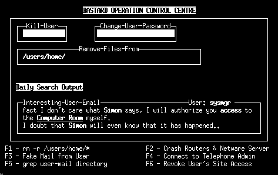

|
Internet-Technologie
Prof. Jürgen Plate |
8 Sicherheit

8.1 Allgemeines
Mit zunehmender Abhägigkeit von Servern im Rechnernetz spielt die
Verfügbarkeit dieser Systeme eine immer größere Rolle.
Neben Verfahren der Fehlertoleranz zur Steigerung der Zuverlässigkeit
spielen Verfahren der Rechnersicherheit eine wichtige Rolle,
um die Verfügbarkeit von Rechnersystemen zu steigern.
Weiterhin sind Rechner mit Anschluß an Netze, insbesondere an
öffentliche Netze, zusätzlichen Anforderungen an die
Sicherheit ausgesetzt, da sie von dort Angriffen ausgesetzt sein können.
Der Zugang zum Netz und die Sicherheit im Netz sind sich durchaus manchmal
widersprechende Anforderungen.
| Eine ausführliche Beschreibung der wichtigsten Aspekte befinden
sich im Skript Netzwerksicherheit.
Deshalb werden an dieser Stelle nur einige Aspekte zusammengefasst, die sich
auf UNIX/Linux-Server beziehen, administrative Ergänzungen gebracht und
einige Standard-Tools beschrieben.
|
8.2 System härten
Das Härten eines Systems beginnt schon mit der Betriebssystem-Neuinstallation.
Stellen Sie den Rechner in ein isoliertes Netzwerk. Zu keiner Zeit sollte man
das ungeschützte System an ein aktives Netz oder gar das Internet anbinden
und es so einer möglichen Kompromittierung aussetzen. Der erste Schritt ist
die Auswahl der Installationspakete. Es wird nur das Minimum installiert, das
man braucht um maximale Effizienz zu behalten. Je weniger Software installiert
wird, desto weniger potentielle Sicherheitlücken entstehen. Unabhängig von der
Installationsvariante sollte man die man-pages und die HOWTOs mitinstallieren.
Während der Installation wird man aufgefordert, sein System zu partitionieren.
Man braucht zumindest eine root-Partition und eine separate Partition für /var,
wohin die Systemlogs und Mails geschrieben werden. Indem man /var isoliert, verhindert
man, das die root-Partition vollgeschrieben wird. Eventuell sprendoert man für die
Datenbereiche des Web- oder FTP-Servers eine weitere Partition.
Wenn auf dem System nicht vertrauenswürdige Benutzer existieren, sollte
man evtl. eine extra /home-Partition anlegen, damit diese Nutzer nicht die
root-Partition vollschreiben können. Dazu kommt dann noch die swap-Partition.
Normalerweise nimmt man hier die doppelte RAM-Kapazität.
Nachdem das System nach der Installation neu gestartet hat, sollte man unbedingt
die empfohlenen Sicherheitspatches einspielen. Diese Patches sind extrem wichtig,
um ein System zu härten und sollten immer auf dem aktuellen Stand gehalten werden.
Ohne diese Updates ist das System leicht zu kompromittieren.
Dienste eliminieren
Nach der Installation aller Pakete und Patches und dem Neustart des Systems
sind wir jetzt bereit das Betriebssystem zu härten. Härten besteht
im wesentlichen darin, Dienste abzuschalten, Logging hinzuzufügen, verschiedene
Dateien zu bearbeiten und TCP-Wrapper zu implementieren.
Linux ist ein mächtiges Betriebssystem, das viele nützliche Dienste anbietet.
Die meisten davon werden aber nicht gebraucht und stellen ein potentielles Risiko.
Der erste Ansatzpunkt ist die Datei /etc/inetd.conf. Diese Datei legt fest,
auf welche Dienste der Daemon lauscht. Im Ursprungszustand ist der inetd
für eine Vielzahl von Diensten konfiguriert. Es werden alle Zeilen auskommentiert,
die nicht benötigte Dienste enthalten ("#" an den Zeilenanfang setzen). Zur Sicherheit
können Sie sich alle noch aktiven Dienste mittels grep -v "^#" /etc/inetd.conf
anzeigen lassen. Danach muß der inetd ein HUP-Signal bekommen. Da aber nach allen
Arbeiten der Rechner sowieso nochmals gebootet wird, kann man sich das an dieser
Stelle sparen.
Der nächste Ansatzpunkt sind die Start-Skripte. Diese Skripte bestimmen, welche
Dienste durch den init-Prozess gestartet werden. Man findet sie je nach Distribution
in /etc/init.d, /sbin/init.d oder /etc/rc.d.
Hier werden alle nicht benötigten Start/Stop-Skripte durch Anhängen von ".inaktiv"
umbenannt. Kritisch sind hier unter anderem:
telnetd (Telnet abschalten, Logins nur per ssh erlauben)
portmap (wird von rpc-Diensten wie NIS oder NFS benötigt)
netfs (Der NFS-Client)
rstatd (Man sollte versuchen, auf alle "r"-Dienste zu verzichten)
rusersd
rwhod
rwalld
bootparamd (Für diskless clients, abschalten)
yppasswdd (Nur bei NIS-Servern, ein extrem verwundbarer Dienst)
ypserv
atd (Wird vom "at"-Dienst benutzt)
snmpd (SNMP daemon, kann detaillierte Informationen über das System geben)
named (DNS server)
routed (RIP: abschalten!)
lpd (Druckdienste)
nfs (Benötigt für den NFS Server, sonst abschalten)
amd (AutoMount daemon)
gated (für andere Routingprotokolle wie OSPF)
sendmail (man kann dann immer noch E-Mails senden, nur keine empfangen oder weiterleiten)
ypbind (nötig, wenn man ein NIS-Client ist)
xfs (X font Server)
innd (News Server)
linuxconf (Fernkonfiguration per Browser. Der Traum jedes "bösen Buben")
Nach der Anpassung der Skripte (und einem Reboot), kann man sich mit dem Kommando
ps -aux ansehen, wwelche Prozesse noch laufen. Außerdem sollte man feststellen,
welche Dienste noch laufen: netstat -na --ip
Logging und Tuning
Alle Systemlogs liegen in /var/log. Standardmäßig hat Linux eine
hervorragende Logfunktion, außer für ftp. Man hat zwei Möglichkeiten, ftp mitzuloggen:
entweder man editiert die Datei /etc/ftpaccess oder die Datei
/etc/inetd.conf. Letzteres ist einfacher. ändern Sie die Date wie folgt:
ftp stream tcp nowait root /usr/sbin/tcpd in.ftpd -l -L -i -o
Die -l Option sorgt dafür, daß jede ftp-Sitzung im syslog protokolliert wird.
Wird das -L flag gesetzt, werden bei Aufruf des ftp-Servers alle USER-Befehle
mitprotokolliert. Die -i Option bewirkt, daß alle Dateien, die der FTP-Server
empfängt, in der Datei xferlog mitprotokolliert werden und durch die Option -o
werden alle Dateien, die der Server gesendet hat, in der Datei xferlog
mitprotokolliert.
Der nächste Schritt besteht darin, die meisten Systemaccounts aus der Datei
/etc/passwd zu entfernen. Linux stellt diese Accounts für verschiedene
Systemdienste zur Verfügung, die eventuell nicht gebraucht werden. Je mehr Benutzer
es gibt, um so einfacher ist es, Zugriff auf ein System zu bekommen. Ein Beispiel
ist der User "news". Wenn kein Newsserver läuft, ist dieser Benutzer überflüssig
Jetzt wird die Datei /etc/ftpusers angepaßt. Jeder Benutzer, der in dieser
Datei aufgeführt wird, darf sich nicht per FTP anmelden. Diese Anpassung verbietet
es gängigen Systemaccounts wie root oder bin FTP-Sitzungen aufzubauen.
Bei Linux existiert diese Datei standardmäßig. Stellen sie sicher, das root auf
jeden Fall enthalten ist.
Die Datei /etc/securetty listet auf, mit welchen ttys sich root verbinden
darf. Lassen sie nur die Konsol-ttys (tty1, tty2 usw.) in dieser Datei um
Root-Logins auf lokale Terminals zu beschränken.
Kontollieren Sie alle cron-Aufträge (/etc/crontab, /etc/cron.d, die
Crontab von root usw.), ob da nur das enthalten ist, was Sie wirklich wollen.
Verbindungen zum Server
Es ist wichtig, zur Administration oder den Upload von Dateien eine sichere Verbindung
zum Server zu haben. Dafür bieten sich zwei Möglichkeiten, ssh und der TCP-Wrapper.
ssh verschlüsselt jede Kommunikation zwischen Administrator und Server. Ein
TCP-Wrapper wehrt zwar unerwünschte Verbindungen ab, schützt den Netzverkehr nicht
gegen das Abhören. Hacker können immer noch jeden Tastendruck im Netz mitlesen.
Ersetzen Sie telnet und ftp durch ssh und scp.
ssh ähnelt TCP-Wrappern insofern, als es seine eigenen Protokollorierung
besitzt und einschränken kann, welche Systeme sich mit dem Server verbinden können.
Mehr Informationen über ssh sowie das Programm selber inklusive Sourcecode
für Clients und den Serverdaemon findet man unter
http://www.ssh.org/download.html.
Eine andere Variante ist OpenSSH
(http://www.openssh.com).
Wenn man sich ohne Vorbereitung versucht anzumelden wird man wie gewohnt nach
einem Passwort gefragt. Vorher wird noch sichergestellt, ob man sich mit dem
Rechner überhaupt verbinden will:
$ ssh tralala
The authenticity of host 'tralala (192.168.1.32)' can't be established.
RSA key fingerprint is 69:fd:32:d8:cf:d6:f3:8c:37:41:97:3f:54:25:90:0b.
Are you sure you want to continue connecting (yes/no)? yes
Warning: Permanently added 'tralala,192.168.1.32' (RSA) to the list of known hosts.
plate@tralala's password: geheim
...
Ein TCP-Wrapper kann zwar nicht verschlüsseln, ist aber in der Lage
zu protokollieren und zu kontrollieren wer Zugriff auf den Server hat. Es handelt
sich hier um ein Programm, das sich zwischen den inetd und die Dienste wie
telnet und ftp schaltet. Anhand der Dateien /etc/hosts.allow
und /etc/hosts.deny wird die Zugriffsberechtigung überprüft. Wenn der Zugriff
berechtigt erfolgt, übergibt der Wrapper die Verbindung an das entsprechende
Programm. Ansonsten wird die Verbindung gekappt. Die Konfiguration wurde bereits in
Kapitel 3.4 besprochen. Deshalb hier nur noch zwei
Empfehlungen für den Einsatz von TCP-Wrappern:
- IP-Adressen statt System- oder Domänennamen verwenden
- In der Datei /etc/hosts.deny jeden Zugriff verbieten und dann selektiv
in der Datei /etc/hosts.allow wieder freigeben.
Weitere Maßnahmen
Die oben beschriebenen Maßnahmen sind absolut notwendig. Die folgenden Aktionen
verbessern die Sicherheit weiter.
- Erstellen Sie eine administrative Gruppe (wheel oder staff).
Diese Gruppe besteht aus ausgewählten Personen, die administrative Kommandos wie
z.B. /usr/bin/su ausführen können. Durch Beschränkung der Personengruppe
steigert man die Systemsicherheit. Bei allen kritischen Systemprogrammen ändern
Sie die Gruppe auf wheel und beschränken Sie die Execute-Berechtigungen
auf Eigentümer und Gruppe (Achtung: das SUID- oder GUID-Bit muß unverändert bleiben),
z. B. mit chmod o-x programmname.
- Dann werden die Dateien .rhosts, .netrc und
/etc/hosts.equiv gesperrt, indem alle Rechte entfernt werden
(chmod 0 Dateiname). Die r-Befehle nutzen diese Dateien um auf Systeme
zuzugreifen. Sind die Dateinen nicht vorhanden, legt man sie per touch-Befehl
an.
8.3 Tools
Hackertools?
Das einzig wirklich gefährliche Hackertool sitzt zwischen den Ohren
und vor dem Bildschirm.
Welche Tools liegen auf meiner Platte?
| bash, perl |
Werkzeuge zur Steuerung von Komponenten für den
Netzwerkzugriff, mit dem Ziel, aus vorgefertigten
Bauteilen schnell massgeschneiderte Angriffstools
zusammenstellen zu können.
|
|
ldaplib | Bibliothek zum Erstellen von Programmen zum Auslesen
von fremden Passwortservern (Active Directory-Angriffe)
|
|
free | Arbeitsspeicherverwendung
|
|
df | Speicherplatz auf gemounteten Geräten
|
|
uptime | Anzeige der Systemlast und der Uptime
|
|
hostname, uname | Host- und OS-Namen anzeigen
|
|
ifconfig, iwconfig | Informationen über Netzwerkgeräte (als root)
und WLAN anzeigen
|
|
top | kurze Systeminformationen (Last, Speicher, etc) und Anzeige der Prozesse.
htop macht das Ganze noch komfortabler.
|
|
ps, pstree | Anzeige der Prozesse (auch in Baumform)
|
|
netstat | Informationen über Netzwerkverbindungen, Routingtabelle, etc.
|
|
dmesg | Alle Systemstart-Informationen des Kernels (u.a. auch die Erkennung der Hardware)
|
|
iptraf | Viele Möglichkeiten zur Überwachung des IP-Verkehrs
|
|
wipe | Werkzeug zur Datenlöschung, spezifisch mit dem
Zweck spätere Rekonstruktion der gelöschten Daten
zu erschweren.
|
|
mysqllib | Unabdingbare Bibliothek zum Auslesen fremder Datenbankserver.
|
|
sash | "System Administrator Shell", kleines Tool, mit dem ein
Eindringling auch dann viele Sysadmin-Funktionen aufrufen kann, wenn
der Eigentümer des Systems die notwendigen Administrationswerkzeuge
eigentlich nicht installiert hat.
|
|
net_tool | enthält mit "arp" ein Werkzeug zum Fälschen der
Mac-Adressen von Systemen und damit zum Address-Spoofing.
|
|
rzsz, kermit | Werkzeuge zum übertragen von binären Dateien
über Datenkanäle, die eigentlich nur zur
Übertragung von Text geeignet sind.
|
|
lsof | Werkzeug zur Systemanalyse, kann verwendet werden, um
versteckte Systemmonitore zur erkennen, Auditing zu unterlaufen.
|
|
bindutil | Alle notwendigen Werkzeuge, um DNS-Anfragen zu
simulieren, fremde DNS-Zonen auszuspionieren und
ggf. auch einen Nameserver mit falschen Informationen
zu füttern.
|
|
tcpdump, etherreal | Netzwerksnooper, ideal geeignet, um in einem
fremden Netz Passworte aufzuschnappen.
|
|
netcat | DAS Tool zum Faken von Serverdiensten, zum Redirect von
legitimen Servern auf illegale Dienste und zum Tricksen
und Tarnen schlechthin. Zusammen mit nmap und tcpdump
essentielle Bestandteile in jedem Hackerwerkzeugkasten.
|
|
nmap | Portscanner zum Ausschnüffeln von offenen Serverdienste
und zum Erstellen von Netzwerkplänen in Opfernetzwerken.
|
|
saint, nessus | Vulerability Scanner.
|
|
wget | Werkzeug zum Raubkopieren fremder Websites und
geeignet, um DDOS-Angriffe auf fremde Websites zu treiben.
|
|
cracklib | Bibliothek zum Schreiben und Betreiben von Passwortcrackern.
|
|
gdb, ddd, strings | Werkzeuge zur Analyse fremder Binärprogramme.
|
Systeminfos
Unter /proc befinden sich beim klassischen Unix nur Informationen zu Prozessen. Bei
Linux findet man jedoch noch einiges mehr. Die Informationen können ganz einfach z.B.
per cat-Kommando auf der normalen Konsole angezeigt werde, da es sich um reine (Pseudo-
Textdateien handelt.
/proc/cpuinfo - Informationen zur CPU (u.a. Name, Taktfrequenz, Cache-Größe)
/proc/meminfo - Informationen über den Arbeitsspeicher (u.a. Gesamtgröße, Cache, Swap)
/proc/partitions - Informationen über Partitionen des Massenspeichers (u.a. Partitionsname,
Anzahl der Blöcke)
/proc/modules - Übersicht über die geladenen Module (u.a. Name, Speicheradresse)
/proc/devices - Übersicht über vorhandene Char- und Block-Devices
/proc/version - Informationen über die Kernelversion
/proc/loadavg - aktuelle Systemauslastung
/proc/stat - Prozesse
/proc/interrupts - Übersicht über Interrupts
/proc/net/dev - Statistik der Netzwerkgeräte (u.a. übertragene Bytes, Fehler)
/proc/bus - Informationen und Übersichten über die Busse im Rechner.
/proc/bus/*/devices - Übersichten über die jeweiligen Geräte des Bus
/proc/ide - Hier finden sich die IDE-Geräte
/proc/ide/*/model - Die Modellbezeichnung des Geräts
/proc/acpi/thermal-zone/THRG/temperature - CPU-Temperatur
tcpdump
tcpdump ist ein Sniffer, der alle Pakete im LAN mitlesen und auswerten kann. Das Programm
ist in nahezu allen UNIX- und Linux-Distributionen enthalten. Es ist ein Standard-Tool, das
auch schon viele Filterfunktionen implementiert hat. Eine ausführliche Beschreibung
liefert die Manual-Seite..
ethereal
Ethereal ist ein Freewaresniffer mit grafischer Oberfläche, der alle Pakete im LAN
mitlesen und auswerten kann. Die abgehörten Pakete werden übersichtlich dargestellt,
definierte Filter sortieren die gewünschten Pakete. Ethereal analysiert alle Pakete
des ISO/OSI-Layers vom Ethernetframe bis zur telnet-Session. Zu finden unter
www.ethereal.com.
Crack
Der Standard Passwort-Cracker für Unix. Benutzeraccounts, die nicht oder nur
unzureichend geschützt sind, bieten einen möglichen Angriffspunkt in
das System. Das Programm Crack versucht, mit verschiedenen Methoden,
Paßwörter zu raten und gibt bei Erfolg Warnmeldungen aus.
Dem Programm werden als Eingabe ein oder mehrere Paßwortdateien, sowie
Wörterbücher (z. B. /usr/dict/words) übergeben. Crack
sortiert die Wörter aus den Wörterbüchern, verschlüsselt sie
nach dem Standardverfahren (crypt) und vergleicht die so erhaltenen Wörter mit
den Einträgen aus den Paßwortdateien. Dabei wird jeder Eintrag mehrfach
überprüft; basierend auf einer Reihe von Regeln, welche auf die
Wörterbücher angewendet werden (z.B. Wortkombinationen, etc.).
Diese Regeln können vom Anwender beliebig verändert bzw. ergänzt
werden. Crack versucht nicht, in Benutzeraccounts einzubrechen! Es hält
auch keinen Benutzer davon ab, "leicht" zu ratende
Paßwörter zu benutzen!
Bezugsquelle: http://www.users.co.uk/~crypto/
Handbuch: HTML-Fassung des Manuals
Hinweise:
Das Verzeichnis Dicts steht für zusätzliche Wörterbücher
zur Verfügung.
Das Programm wird von der Kommandozeile aus gestartet. Es werden ein oder mehrere zu
überprüfende Paßwortdateien übergeben. Es ist günstig,
mit einer Kopie von /etc/passwd zu arbeiten. Da in der Regel die
Datei /etc/shadow die Paßwörter enthält, gibt
es Programme, welche die Shadow-Paßwörter in die /etc/passwd
integriert. Crack läuft im Hintergrund und schreibt seine Ausgaben in Dateien,
die in vorher festgelegten Verzeichnissen stehen.
Einige der Programm-Optionen sind:
- -f
Crack läuft nicht im Hintergrund. Diese Option ist nur bei sehr kleinen
Paßwortdateien sinnvoll.
- -m
Falls das Paßwort eines Benutzers geraten wurde, wird diesem eine Nachricht
gesendet. Der Text dieser Nachricht ist in der Datei
Scripts/nastygram individuell veränderbar.
- -v
Stellt den "verbose"-Modus ein. Es werden sehr(!) viel mehr Ausgaben erzeugt.
- -network
Läßt das Programm im Netzwerk-Modus laufen. Die zu untersuchende
Paßwortdatei wird gesplittet und Crack wird auf mehreren im Netzwerk
angeschlossenen Hosts gestartet. Dies erfordert eine Anpassung der Datei
Scripts/network.conf.
John the Ripper
John the Ripper ist ein modernerer
Password-Crack-Programm, das auch per DES (Data
Encryption Standard) verschlüsselte Passwörter
entschlüsseln kann. (Linux- und Unix-Passwörter werden
standardmäßig per DES verschlüsselt).
Im Single Mode versucht John, die in der
Password-Datei gespeicherten GECOS-Informationen (General
Electric Comprehensive Operating System), also die
persönlichen Daten zu jedem User wie z.B. Name, Telefonnummer
ect, als Passwort einzusetzen. John braucht eine Passwort-Datei
(/etc/passwd) im alten Stil, d.h. mit gespeichertem Passwort. Heute
wird jedoch in der Regel das Passwort in der Datei /etc/shadow
gespeichert. In diesem Fall hilft das Programm "unshadow", das die
beiden Dateienm zusammenführt.
Dieser Mode ist natürlich nur dann effektiv, wenn die User auch
ihre persönlichen Informationen als Passwort verwenden.
Allerdings ist dieser Mode auch sehr schnell, weshalb man ihn
nicht unterschätzen sollte. Die Effektivität dieses Modes
steigt mit der Anzahl der in der Password-Datei enthalten User,
da er die GECOS-Informationen jedes Users bei allen anderen Usern
auch als mögliches Passwort überprüft.
Der zweite Modus ist der Wordlist Mode.
Die Effizienz dieses Modes hängt
von der Größe und vor allem von der Qualität der
verwendeten Wortliste ab. So kann man server- bzw.
adminspeziefische Wordlists erstellen und damit die
Erfolgswahrscheinlichkeit erhöhen, da man sämtliche zur
Verfügung stehenden Informationen benutzen kann; und genau darin
liegt die Stärke dieses Modes. In der Wordlist-Dateisteht in jeder
Zeile nur eine Zeichenfolge.
Auch sollte darauf geachted werden, dass die Wordlist
beispielsweise alphabetisch sortiert ist, da John ein wenig
schneller arbeitet wenn aufeinaderfolgende Wörter oder
Zeichenfolgen sich nicht allzu stark voneinander unterscheiden.
Der Incremental Mode ist Johns mächtigster Modus. Er
kann jedes existierende Password, unabhängig davon ob es aus
Buchstaben, Sonderzeichen, Zahlen oder Kombinationen besteht,
decrypten indem er sämtliche möglichen Kombinationen
überprüft. Diese Methode wird auch Brute-Force genannt. Hierbei
ist allerdings zu beachten, dass die zum decrypten benötigte
Zeitspanne (abhängig von Prozessorleistung, Passwortlänge und
der im Passwort verwendeten Zeichen) sehr groß sein kann.
Der External Mode ist eher für die erfahrenen
Benutzer ausgelegt, da er vollständig konfiguriert werden muss.
Durch das definieren der Parameter hinter [LIST.EXTERNAL:MODE] in
der john.ini Datei, wird ein komplett neuer, individueller Mode
erstellt. Dadurch wird es vor allem den Benutzern, die mit John
schon Erfahrungen gemacht haben, ermöglicht einen Mode ihren
persönlichen Bedürfnissen anzupassen.
Die wichtigsten Befehle von John sind:
| john -single |
dieser Befehl started John im
Single-Mode |
| john -i |
dieser Befehl started John im
Incremental-Mode |
| john -w:namederwordlist
|
dieser Befehl started John im
Wordlist-Mode |
| john -e:MODE |
dieser Befehl started John im
External-Mode unter Verwendung der bei LIST.EXTERNAL:
definierten MODE Eigenschaften |
| john |
dieser Befehl lässt John
zuerst den Single- dann den Wordlist und schließlich
noch den Incremental-Mode durchlaufen |
| john -show |
dieser Befehl zeigt die
decrypteten Passwörter an |
Hinter jedem dieser Befehle muss noch
die Passwort-Datei angegeben werden. Ohne Parameterangabe
listed John alle verfügbaren Parameter auf.
Die neusten Versionen von John the Ripper findet man unter
www.openwall.com/john/.
Nmap
Nmap ist ein äusserst mächtiger Portscanner unter Linux und Windows.
Er wurde entwickelt, um Systemadministratoren eine Möglichkeit zu bieten,
Netzwerke zu analysieren, festzustellen, welche Hosts aktiv sind
und welche Dienste sie anbieten. Portscanner prüfen IP-Komponenten auf geöffnete
oder geschlossene TCP/UDP-Ports. Mit Hilfe von unterschiedlichen Analysen können
Rückschlüsse auf das untersuchte Betriebsystem und die eingestellten Paketfilterregeln
gezogen werden. Die FIN-Analyse verschickt TCP-Pakete an die Zieladresse, um zu testen,
ob ein Port aktiv ist, aber nicht auf einen Verbindungsaufbau (angezeigt durch ein
SYN-Paket) reagiert. Ein Stealth-Scan führt keinen kompletten Verbindungsaufbau
durch, so dass die Kommunikation nicht in Logdateien vermerkt wird. Pingscans
überprüfen die Aktivität in Netzen und geben dem User einen überblick über die Anzahl
der eingesetzten Hosts.
Nmap unterstützt viele Abtastverfahren:
- UDP- und TCP Connects
- TCP SYN-Scans
- FTP-Proxy (Bounce-Attacks)
- Reverse-Ident
- ICMP-Scans (Ping-Schleife)
- FIN-Scans
- ACK Schleifen (Antwortpakete)
- Weihnachtsbaum
- SYN-Schleifen
- Null-Scan
Zudem kann Nmap Remote-OS-Abfragen über
einen TCP/IP Fingerabdruck, Stealth-Scans, dynamische Verzögerung
und Übertragungsberechnungen, Parallel-Scans, Abfragen von
inaktiven Hosts über parallele Pings, Portfilter-Identifikation,
RPC-Scans, Scans auf fragmentierte Pakets sowie Ziel- und Port-Scans
durchführen. Das Resultat der Scans ist immer eine
Auflistung von interessanten Ports, die für Einbrüche
benutzt werden können. Nmap gibt dabei stets die Portzahl und
den Namen des Services an. Der Zustand des Ports wird mit "geöffnet",
"gefiltert" oder "ungefiltert" angegeben. "Offen"
heißt dabei, der Port kann beliebig angesprochen werden. "Gefiltert"
heißt, ein Firewall verhindert den Zugriff auf den angepeilten
Port. "Ungefiltert" heißt, ein Firewall ist am Ziel-Host zwar
installiert, blockiert aber den Zugriff auf den angepeilten Port nicht.
Abhängig von den verwendeten Parametern können das benutzte
Betriebssystem, die TCP-Sequenz, angemeldete Benutzer, der DNS-Namen und
einige andere Informationen ermittelt werden.
Der kostenlose Port-Scanner unterstützt beispielsweise:
- -sT TCP connect port scan (default)
- -sS TCP SYN stealth port scan
- -sU UDP port scan
- -sP Ping Scan
- -sF, -sX, -sN Stealth FIN, XMAS, Null scan
- -O use TCP/IP fingerprint to guess remote os
- -p ports to scan
- -P0 don't ping hosts
Beispiel für einen nmap-Scan:
nmap -sS -O -p 1-65535 IP -oN Ausgabe.on -oM Ausgabe.om
Bezugsquelle:
Die Installation erfolgt nach Standard-Schema:
gzip -cd nmap-VERSION.tgz | tar xvf -
cd nmap-VERSION
./configure
make
su root
make install
Für Linux gibt es passende RPM-Archive.
Nmap wird über zahlreichen Kommandozeilenparameter gesteuert.
Sind angebene Kombinationen nicht sinnvoll, gibt Nmap eine entsprechende
Warnmeldung aus und informiert den Nutzer darüber. Wenn Sie
sich nicht sicher sind, können Sie sich die einzelnen Parameter
auch anzeigen lassen. Dies geschieht über die Eingabe von:
nmap -h.
Scan-Arten
- -sT
Der TCP-Connect-Scan ist der grundlegendste Scan und er wird dazu
benutzt, um einen Port zu öffnen. Ein großer Vorteil
hierbei ist, dass der Nutzer keine besonderen Privilegien für
die Ausführung benötigt, da der TCP-Connect-Scan auf den
meisten Unix-Maschinen privileglos ausgeführt werden kann.
- -sS
Der TCP-SYN-Scan ist ein halb offener Scan, weil keine vollständige
TCP-Verbindung aufgebaut wird. Es wird lediglich ein SYN-Paket (SYN=Synchronisation)
geliefert, dass eine Antwort erwartet, um dann eine Verbindung zu
öffnen. Ein SYN/ACK (ACK=Empfangsbestätigung) setzt den
Port auf "listening", also horchend. Wird ein SYN/ACK
empfangen, wird von dort sofort ein RST (zurücksetzen) der
Verbindung signalisiert. Auf die Weise erhält der Angreifer
eine Bestätigung, dass dieser Port ansprechbar ist. Der Nachteil
hierbei ist, dass viele Firewalls diesen Kunstgriff nicht bemerken
und entsprechend nicht loggen.
- -sF -sX -sN
Stealth FIN (beenden), Xmas tree (weil einige Hardware-Firewalls
dabei wie ein Weihnachtsbaum aufleuchten) oder ungültige Null-Scans
werden eingesetzt, wenn Firewalls oder Paketfilter explizit auf
SYNs achten, die auf überwachte Ports oder Programme treffen.
Die Idee dabei ist, dass ein geschlossener Port in jedem Fall mit
einem RST (zurücksetzen der Verbindung) reagiert, während
ein offener Port das Paket ignorieren muss (RFC 793 pp 64). Der
Vorteil liegt hier eindeutig bei NT-Maschinen, da Microsoft diesen
Standard völlig ignoriert.
- -sP
Die Ping-Abtastung ermöglicht es zu ermitteln, welche Hosts
in einem Netzwerk ansprechbar sind. Nmap sendet dazu einfach ein
ICMP-Echo und wartet auf eine Antwort. Erfolgt die Antwort als Block-Echo-Paket,
so kann alternativ auch ein TCP-ACK (Empfangsbestätigung) gesendet
werden. Erfolgt ein RST (zurücksetzen), ist der angepingte
Host ansprechbar.
- -sU
Der UDP Scan ist eine gute Methode, um zu ermitteln, welche UDP-Ports
an der betroffenen Maschine offen sind (User Datagram Protocol,
RFC 768). Gesendet wird dabei ein 0 Byte UDP-Paket. Erfolgt eine
ICMP-Meldung (Destination unreachable), ist der Port geschlossen.
Anderenfalls ist davon auszugehen, der Port ist geöffnet. Einige
Leute sind übrigens der Ansicht, Scans von UDP-Ports sind sinnlos,
weil sie keine Gefahr darstellen. Solaris zum Beispiel besitzt jedoch
ein bekanntes Sicherheitsloch, bei dem rcpbind über einen undokumentierten
UDP-Port oberhalb von 32770 entdeckt und genutzt werden. So macht
es nichts, wenn Port 111 vom Firewall blockiert wird, der Angreifer
kann trotzdem über den UDP-Port darauf zugreifen.
Nach einem Vorschlag in RFC 1812 (Abschnitt 4,3,2,8) wurde die Anzeigerate
der "Destination unreachable" zwar verlangsamt (z.B. im
Linux-Kernel bei 80 pro Sekunde und bei Solaris sogar nur bei 2
pro Sekunde), allerdings ist nmap dann in der Lage, die Rate zu
ermitteln und bremst den Scan dann entsprechend ab, statt das Netz
mit ungültigen Pakets zu überschwemmen, die durch die
Zielmaschine ignoriert werden. So zeigt sich allerdings an der Zielmaschine
ein scheinbar normaler Datenverkehr, der von unachtsamen Administratoren
falsch interpretiert werden könnte.
Microsoft übrigens hat, wie so oft, die Empfehlung ignoriert
und entsprechend keine Begrenzung der Rate im System von Windows
integriert. Es können also in schnellst möglicher Geschwindigkeit
sämtliche Ports gescannt werden.
- -sA
Der ACK-Scan (ACK=Emfpangsbestätigung) ist eine gute Methode
zum Test von Rulesets (Filterregeln) am eingesetzten Firewall. Auf
die Weise lässt sich ermitteln, ob ein Firewall sicher ist
oder ob es nur ein einfacher Paketfilter ist, der ankommende SYN-Pakets
blockiert. Es wird hierzu von nmap ein ACK-Paket mit einer zufälligen
Sequenzzahl abgeschickt, um zu ermitteln, ob und wie die Ports spezifiziert
sind. Erfolgt als Antwort ein RST (zurücksetzen), ist der Port
ungefiltert. Erfolgt keine Antwort oder ein ICMP "Destination
unreachable", ist der Port gefiltert.
- -sW
Der Fenster-Scan ist ein erweiterter Scan, der dem ACK-Scan sehr
ähnlich ist, aber im Gegensatz zum ACK-Scan auch offene Ports
ermitteln kann. Der Scan nutzt dazu eine Sicherheitslücke in
diversen Systemen wie AIX, Amiga, BeOS, BSDI, Cray, Tru64 Unix,
DG7ux, OpenVMS, Digital Unix, FreeBSD, OpenStep, QNX, Rhapsody,
SunOS 4.x, Ultrix, VAX und VxWorks.
- -sR
Der RPC-Scan arbeitet mit verschiedenen Portscan-Methoden von nmap.
Er ermittelt alle offenen Ports und überschwemmt sie mit SunRPC-NULL-Befehlen,
um zu ermitteln, ob es RPC-Ports sind und welches System mit welcher
Versionsnummer sich dahinter verbirgt.
- -b
Die FTP-Bounce-Attacke nutzt eine Eigenschaft des FTP-Protokolls,
dass Unterstützung auch für Proxy-FTP-Ports besitzt. Mit
anderen Worten heißt das, wenn es gelingt, von evil.com auf
den FTP-Server von target.com zuzugreifen, können von dort
aus Daten überall hin ins Netz verschickt werden. Als das RFC
1985 geschrieben wurde, dachte noch niemand an diese Möglichkeit.
Im heutigen Internet kann dieser Protokollfehler aber dazu genutzt
werden, eine bestehende FTP-Verbindung zu "hijacken" und
von dort aus Daten überall ins Internet zu versenden.
Allgemeine Optionen
- -PT
Mit einem TCP Ping können erreichbare Maschinen ermittelt werden,
auch wenn ein Firewall ICMP Pings oder Echos blockiert werden. Hierzu
verwendet diese Scan-Methode ein TCP-Paket mit ACK (Empfangsbestätigung).
Ist die Zielmaschine ansprechbar, antwortet sie mit einem RST (zurücksetzen).
In der Regel wird hierzu der Port 80 benutzt, da er nur sehr selten
von Firewalls gefiltert wird.
- -PS
Diese Option sendet SYN-Pakets, also eine Aufforderung zum Verbindungsaufbau,
statt eines Pakets mit ACK (Empfangsbestätigung). Hier antwortet
der Zielrechner mit einem RST (zurücksetzen) und es wird klar,
der Rechner ist vorhanden und ansprechbar.
- -PI
Die PI-Option sendet einfach nur Pings und hofft auf Server, die
ansprechbar sind und im eigenen Netz auch nach Broadcast-Adressen
suchen. Dies sind IP-Adressen, die von außen erreichbar sind
und Broadcasts (es wird kein festes Ziel definiert sondern an alle
im Netz befindlichen Rechner gesendet) bei ankommenden IP-Paketen
absenden. Sollte dies der Fall sein, sollte das Loch schnell beseitigt
werden, denn der PI-Scan kann eine erste Vorbereitung zu einer Denial
of Service Attacke sein. Genauer gesagt, zu einem Smurf-Angriff.
- -PB
Diese Option stellt den Default-Ping dar. Er verwendet sowohl ACK-
wie auch ICMP Pakets parallel. Auf diese Weise können Firewalls
überwunden werden, die nur eins von beiden filtern.
- -O
Diese Option aktiviert die Identifikation des Zielrechners über
einen TCP/IP-Fingerabdruck. Sie benutzt dazu eine Reihe von Techniken,
die die notwendigen Informationen aus dem Netzwerk-Stack des Zielrechners
ziehen und diese Informationen dann mit denen in einer Datenbank
mit bekannten OS-Fingerabdrücken vergleichen.
- -I
Mit der Option I lässt sich die TCP-Rückkennungs-Abtastung
aktivieren. Aufgrund eines Bugs im Kennzeichnungsprotokoll (RFC
1413) erfolgt über das Protokoll die Freigabe des Usernamens,
der jedem Prozess angefügt ist, der eine TCP-Verbindung aufgemacht
hat.
- -f
Die Option f verursacht die benötigten SYN- FIN oder NULL Pakets
zur Nutzung von fragmentierten IP-Pakets. Die Idee hierbei ist,
die TCP-Header auf mehrere kleine Pakete zu verteilen, um sie schwerer
sichtbar zu machen. Einige Firewalls haben und Intrusion-Detection-Systeme
haben in der Tat Probleme mit der Erkennung fragmentierter Pakets.
- -oN
Mit der Option -oN können die Scan-Ergebnisse in eine Datei
geschrieben werden.
- -p
Mit der Option -p lassen sich Folgen von zu scannenden Ports oder
einen Bereich von zu scannenden Ports angeben.
- -D
Die Option -D ist besonders gerissen, denn mit Hilfe dieser Option
können weitere Maschinen als Lockvögel eingesetzt werden,
die alle den gleichen Zielrechner scannen. Auch wenn an der Zielmaschine
die Abtastversuche registriert werden, kann in der Regel keine Zuordnung
erfolgen, von wo aus der Scanversuch startete.
- -S
Mit der Option -S können gesendete Pakets gespooft, also mit
einer falschen Absender IP-Adresse versehen werden. Auch wenn die
Schutzsysteme des Zielrechners Scans registrieren, können Sie
ihn nicht zum Ursprung zurückverfolgen.
- -g
Die Option -g setzt einen Quellport in die verschickten Pakets.
Viele naive Firewalls und Paketfilter bilden eine Ausnahme in ihren
Filterregeln, erlauben DNS (53) und FTP-Data ( 20) Pakets und akzeptieren
eine Verbindung. Dieser Umstand führt die Sicherheit ad absurdum,
denn Angreifer markieren den Zugriff als DNS oder FTP und verändern
darunter ihren Quellport.
- -r
Diese Option gibt nmap die Anweisung, bis zu 2048 zufällige
Maschinen für einen Scan zu benutzen, um die Sicherungssystem
der eigentlichen Zielmaschine zu verwirren. Besonders dann, wenn
diese Option mit anderen Optionen zum Verlangsamen des Timings der
Scans kombiniert wird.
- -m
Mit der Option -m (max sockets) lässt sich die Höchstzahl
der Sockets einstellen, die parallel benutzt werden. Diese Option
wird gerne dazu benutzt, um die Scans langsamer zu machen und zu
verhindern, dass die Zielrechner abstürzen.
Timing-Einstellungen
Nmap ist an sich schon ein Werkzeug, mit dem Scans weitestgehend
unentdeckt bleiben. In einigen Fällen kann mit zusätzlichen
Optionen das Timing noch feiner abgestimmt werden.
-T (Paranoid, Sneaky, Polite, Normal, Aggressive, Insane)
Mit den -T Optionen lässt sich das Timing der Scans passgenau
auf das Zielsystem einstellen.
Der Paranoid-Modus verlangsamt den Scan
sehr, um eine Entdeckung mittels Intrusion-Detection-System zu vermeiden.
Er serialisiert alle Scand und wartet allgemein 5 Minuten bis zur
Sendung des Folgepaketes.
Der Sneaky-Modus ist mit dem Paranoid-Modus
vergleichbar, nur sendet er die Pakete im Abstand von 15 Sekunden.
Der Polite-Modus erleichtert die Netzlast
und verkleinert die Gefahr des Crashs der Zielmaschine. Er serialisiert
die zu senden Paktes ebenfalls und wartet ca. 0.4 Sekunden bis zum
Folgepaket.
Der Normal-Modus scannt so schnell, wie
es möglich ist, ohne das Netz zu überlasten.
Der Aggressive-Modus setzt einen 5-Minuten-Timeout
pro Maschine, wartet aber nie länger als 1,25 Sekunden auf
eine Antwort.
Insane ist eigentlich nur für sehr
schnelle Netze verwendbar oder wo akzeptiert werden kann, wenn einzelne
Informationen dabei verloren gehen. Der Insane-Modus wartet nur
0.3 Sekunden bis zum nächsten Paket.
hunt
hunt von Pavel Krauz ist ein weiterer Sniffer, der sich anbietet, wenn Sie weniger
Wert auf pure Datenkolonnen als auf eine einfach lesbare, direkte Aufzeichnung von
Befehlseingaben und Sitzungen legen.
Bezugsquelle: http://lin.fsid.cvut.cz/~kra/index.html#HUNT
Der Autor von hunt hat neben dem Quellpaket auch dynamisch/statisch gelinkte
Binärdateien zur Verfügung gestellt. hunt erhalten Sie als tarball. Als Erstes
müssen Sie das komprimierte Archiv dekomprimieren und auspacken. Als Ergebnis dieses
Vorgangs erhalten Sie die Quellcode-Distribution und die vorkompilierten Binärdateien.
Die statische Binärdatei für Linux heißt hunt-static. Ich empfehle Ihnen, diese Datei
zu verwenden, da es beim Kompilieren des Quellcodes zu Problemen kommen kann, wenn
Ihnen die erforderlichen Bibliotheken fehlen.
hunt basiert auf Curses und ist deshalb recht benutzerfreundlich. Das Startmenü sieht
folgendermaßen aus:
--- Main Menu --- rcvpkt 0, free/alloc 63/64
l/w/r) list/watch/reset connections
u) host up tests
a) arp/simple hiiack (avoids ack storm if arp used)
s) simple hijack
d) daemons rst/arp/srliff/mac
o) options
x) exit
* >
hunt liefert in der Regel Klartextausgaben der gescannten Verbindung. Das sind
zwar weniger Informationen als bei tcpdump, reicht aber oft vollkommen aus.
Man kann sich bestimmte Verbindungen für die Überwachung aussuchen. hunt
erkennt nicht nur neu gestartete Verbindungen, sondern auch solche, die beim
Starten von hunt schon etabliert waren. Außerdem verfügt das Programm über
Spoofing-Tools und es kann Verbindungen übernehmen.
SAINT (Security Administrator's Integrated Network Tool)
SAINT wurde von World Wide Digital Security, Inc. (WWDSI) herausgebracht
und ist eine aktualisierte, stark verbesserte Version von SATAN, die viele
neuere Schwachstellen erkennen kann. Voreinstellungen werden in den
Konfigurationsdateien config/saint.cf und paths.pl abgelegt.
Bezugsquelle: http://www.wwdsi.com/saint/
Bislang war der eigentliche Scanner kostenlos, seit September 2001 gibt es allerdings
eine (neuere) Version, die nur in Verbindung mit den kommerziellen
Auswertungsprogrammen (Saintwriter, Saintexpress) erhältlich ist.
Die frei verfügbare Version von Saint ist dementsprechend nicht mehr ganz aktuell
und wird wohl zukünftig immer etwas hinter der kommerziellen Version hinterher hinken
(was für Security-Scanner extrem ungünstig ist).
Benutzer von Linux mit einer Kemel-Version ab 2.4 benötigen einen zusätzlichen
Patch, um Fehlalarme zu vermeiden (diesen Patch finden Sie unter
http://www.wwdsi.com/saint/patches.html#linux24). Bei anderen Problemen mit der
Kompilierung von SAINT sollten Sie sich an die Autoren wenden oder Mitglied der SAINT-Mailingliste werden (Eintrag unter http://www.wwdsi.com/saint/list-server.html).
Unter anderem überwacht SAINT folgende Schwachstellen:
- CGI-basierter Web-Angriffe
- Denial-of-Service-Angriffe
- POP-Serverangriffe
- SSH-Schwachstellen
- Remote-Pufferüberläufe
Bei der Installation von SAINT gehen Sie genauso vor wie bei den meisten Programmen.
Auspacken, "make linux" aufrufen, installieren. SAINT kommuniziert per Webbrowser
mit dem Anwender. Zur Konfiguration ist ein Wenig Studium der Dokumentation nötig.
WWDSI bietet auch WebSAINT an, einen benutzerfreundlicheren fähigen Scanner, der
grafische Java-basierte Netzwerkstatistiken generiert. Er ist für weniger
technisch orientierte Anwender gedacht, die keine Zeit oder Lust haben, sich mit
der SAINT-Konfiguration auseinander zu setzen. WebSAINT verwendet SSL zur
Verschlüsselung Ihrer Datenübertragung und ist zahlreichen Berichten zufolge recht
sicher.
Ein Ergebnis von Saint sieht folgendermaßen aus; im Normalfall gibt SAINT
eine HTML-Datei aus, so muß man sich die Unterpunkte als Link vorstellen.
Results - victim.provider.de
General host information:
Host type: Linux 2.4.2
Subnet 192.168.220
Scanning level: heavy
Last scan: Wed Jun 26 13:42:23 2002
Network Services:
FTP server
Finger server
POP server
R Series server
SSH server
Telnet server
WWW (non-standard port 1043) server
X Windows server
8 other services (show all services)
Vulnerable Services:
rshd is enabled
pop receives password in clear
rlogin is enabled
Neben der normalen Suche die sich hauptsächlich auf Dienste bezieht, kann man die
Möglichkeiten von Saint noch weiter ausbauen, indem man weitere Scanmöglichkeiten
einstellt.
Saint bietet zu erkannten Problemen recht ausführliche Hintergrundinfos und
Lösungsmöglichkeiten. Angenommen, SAINT hat ein rlogin-Sicherheitsloch gefunden,
dann kommt folgende Info:
Remote Login on the Internet
Impact
If configured to trust all remote hosts, the remote login service could allow
any remote user to gain shell access to a target system without ever being
prompted for a password.
Background
The rlogin service allows remote users, using an rlogin client, to log on to an
rlogin server without the need for a password. The rlogin process is similar to
telnet, in that it gives users shell access to a remote computer. But, unlike
telnet, rlogin does not prompt the user for a username (although, in most cases,
the user is prompted for a password). The rlogin process uses the .rhosts file
to list trusted hosts (those machines allowed to use the service). If the .rhosts
file is not configured properly, it is possible for a hacker to gain access to a
target machine, via the rlogin process, without being prompted for a password.
The Problem
This service, if misconfigured, allows unauthorized, untrusted users to gain shell
access to a target machine without being prompted for a password. In other words,
hackers exploiting this vulnerability can gain access to a target machine as a trusted
user and then delete system files, change configuration files and generally wreak
havoc on the target machine. Another problem with this service is that even when
passwords are prompted for, they are transmitted plaintext and in the clear (in other
words, they are sent to and from the machine unencrypted), so that any hacker using a
password sniffer program can "grab" them and then access the target system as a
trusted user.
Resolution
One fix for this vulnerability is to disable login in /etc/inetd.conf. If that is not
practical, be sure that /etc/hosts.equiv and users' .rhosts files contain only trusted
hosts, and contain no "+" characters. The risks of password sniffing may be minimized
by using an encrypted version, such as Kerberos. Or, you may use TCP wrappers to help
secure your network.
Where can I read more about this?
Search your system's man pages for information on the rlogind or in.rlogind service for
more information.
nessus - Security Scanner
Nessus gehört zur Gruppe der Securityscanner. Nessus ist Freeware und arbeitet auf der
Basis einer regelmäßig aktualisierten Datenbank, die die neuesten Schwachstellen enthält.
ähnlich wie bei nmap gibt man die gewünschten IP-Adressen oder -bereiche an, und erhält
kurze Zeit später eine Analyse über geöffnete Ports, Softwareversionen dieser und eine
nach Dringlichkeit sortierte Liste aller Schwachstellen, welche über Links zu näheren
Informationen des Certs verbunden sind. über Plugins sind eine Reihe von weiteren
Tests wie Denial of Service-Tests u.ä. möglich.
Bezugsquelle: http://www.nessus.org/download.html
hping2
hping2 ist ein Paketgenerator, der dem User Zugriff auf alle Eigenschaften von
TCP/UDP/ICMP/IP erlaubt. über Optionen der Kommandozeilen ist so möglich einzelne
Flags von TCP-Paketen zu setzen, die Payloadgröße festzulegen und den Ziel- und
Quellport zu wählen. Mit diesem Tool lassen sich sogar Source-IP-Adressen fälschen.
-1 Protokoll tcp
-2 Protokoll udp
-3 Protokoll icmp
-a Source IP-Adresse
-s Source Port (-> Ethereal)
-p Destination Port
-d Datenpaketgröße
--fast Flooding der Pakete
Bezugsquelle: http://www.hping.org/download.html
ISIC - IP Stack Integrity Checker
ISIC testet die Stabilität des implementierten IP-Stacks. Es generiert je nach Angabe
zufällige TCP, UDP, IP oder ICMP- Pakete. über Prozentangaben hat der User Einfluss auf
die jeweiligen Paketeigenschaften wie gesetzte Flags, falsche Paketprüfsumme,
fragmentierte Pakete usw.
-p Protokoll
-s Source IP Adresse,
Option rand erzeugt zufällige IP-Adressen
-d Destination IP-Adresse
Bezugsquelle: http://www.packetfactory.net/Projects/ISIC/
Warning: ISIC may break shit, melt your network, knock out your firewall, or singe
the fur off your cat.
iftop: display bandwidth usage on an interface
iftop does for network usage what top(1) does for CPU usage. It listens to
network traffic on a named interface and displays a table of current bandwidth
usage by pairs of hosts. Handy for answering the question "why is our ADSL
link so slow?".
Whisker
Whisker ist ein freier Scanner der speziell für Webserver-Tests ausgelegt
ist und zahlreiche CGI-Tests durchführt.
Bezugsquelle: http://www.wiretrip.net/rfp/p/doc.asp?id=21&iface=2
Eine Liste der Top 75 Security Tools finden Sie bei
http://www.insecure.org/tools.html.
Copyright © FH München, FB 04, Prof. Jürgen Plate
Letzte Aktualisierung: 10. Nov 2005
 Zum vorhergehenden Abschnitt
Zum vorhergehenden Abschnitt Zum Inhaltsverzeichnis
Zum Inhaltsverzeichnis Zum nächsten Abschnitt
Zum nächsten Abschnitt